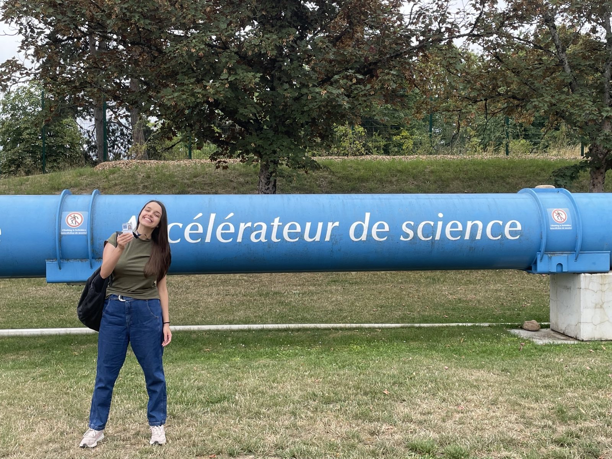

Work Experience
Research, data science and artificial intelligence experience across academia and international research institutions.
Work Experience
CERN Doctoral Student Programme
2023 – PresentCERN, Switzerland
Research: AI-Driven Tool for XAI Breast Cancer Risk Prediction based on EPIC dataset
- Developed predictive models for breast cancer risk prediction using a large-scale real-world dataset.
- Performed statistical analysis and scenarios to explain model performance and findings.
- Collaborated with multidisciplinary teams to translate analytical findings.
- Ensured strict compliance with data privacy regulations when handling sensitive participant data.
- Delivered presentations and facilitated discussions for diverse audiences across a wide range of backgrounds and educational levels.
Research Fellowship
2022 – 2023ICNAS Coimbra, Portugal
Institute for Nuclear Sciences Applied to Health
Research: MRI Biomarkers in Liver Metastases
- Performed radiomics-based classification models to identify histopathological behaviour patterns in liver metastases originating from colorectal cancer.
- Collaborated with a multidisciplinary team from Coimbra Hospital and University Center and ICNAS.
- Translated medical terminology for engineers and technical concepts for medical professionals to ensure clear communication and shared understanding of results.
- Ensured strict compliance with data privacy regulations when handling sensitive participant data.
Teaching Experience
CERN Studentship Support
2023 – 2026Supported students in machine learning fundamentals and applied AI projects.
Supervised students: Emilie Lucia Peterschmitt (MSc), Jeevi Scarozza (BSc), Felix Le Calvez (High School), James Murray (High School).
Private Physics Tutoring
2023Delivered private tutoring in physics for school-level students.
Aeromedical Instruction Instructor
2021Delivered a 16-hour online aeromedical training module for aviation professionals, including flight instructors, commercial pilots and cabin crew at Fly Center Escola de Aviação Civil, Brazil.
Additional Experience
IEEE University of Coimbra Student Branch
2021 – 2022Volunteer member of the IEEE organization for the advancement of technology, contributing to technology outreach and academic initiatives.
IEEE Women in Engineering (UC Chapter)
2021 – 2022Volunteer contributor responsible for creating and managing digital content across Instagram, Facebook and LinkedIn, promoting women in engineering.
Buddy Program, University of Coimbra (DRI)
2017 – 2018Supported the integration of international students through the "Buddy – Adopt a Foreigner" program.